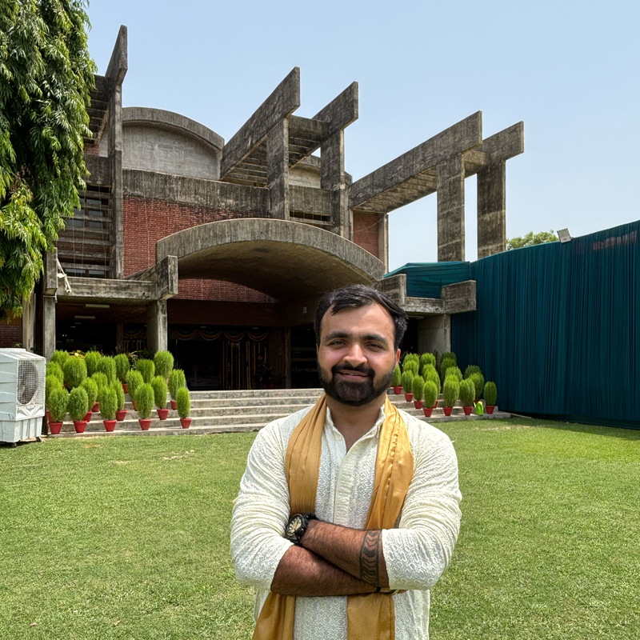

Mayank Raheja
Senior Security Engineer
I build security into software delivery at scale - DevSecOps pipelines, application security, and now securing AI/LLM systems. Currently at Flipkart.
🎓 eMasters in Cybersecurity, IIT Kanpur (2026) · 📍 Bengaluru, India
LinkedIn Resume
About
I'm a security engineer who started as a penetration tester and bug hunter and grew into building security programs for engineering teams. Over the last several years at Nykaa and Flipkart I've worked on shifting security left - embedding automated checks into CI/CD, helping developers fix issues faster, and reducing risk in fast-moving e-commerce platforms.
Today I'm focused on DevSecOps and expanding into AI security: understanding how LLM-powered applications, agents, and the pipelines around them change the threat model, and how to secure them without slowing teams down.
In July 2026 I completed an eMasters in Cybersecurity from IIT Kanpur, deepening the foundations behind the work I do every day.
Focus areas
DevSecOps
Security automation in CI/CD: SAST, DAST, SCA, secrets scanning, and guardrails developers actually adopt.
AI / LLM Security
Threat modelling AI apps and agents: prompt injection, data leakage, insecure tool use, and model supply chain risks.
Application Security
Web, API, Android and iOS security testing, secure code review, and developer-facing remediation.
Vulnerability Management
Triage, prioritisation and driving fixes to closure across engineering teams.
Experience
Senior Security Engineer @ Flipkart
- Leading DevSecOps initiatives to embed security across the software delivery lifecycle.
- Exploring and building security practices for AI/LLM-based systems.
Security Engineer @ Nykaa
- Application security and vulnerability management for Nykaa's e-commerce platforms.
- Worked with engineering teams to integrate security into development and release workflows.
Associate Infosec Consultant @ RiskBricks Solutions Pvt Ltd
- Information security consulting and application security assessments.
Security Analyst Intern @ Kratikal Tech
- Web, Android and iOS application penetration testing.
Internships @ Gurugram Police Cyber Cell, Recon Global, CrawSecurities
- Cyber security ambassador project lead, web/Android pentesting, and ethical hacking training.
Credentials & recognition
Certifications & training
- Certified Ethical Hacker (CEH)EC-Council
- Secure CodingCybrary
- Ethical Hacking, Pentesting, CCNA, ForensicsByteCode
Achievements
- 13 responsible disclosuresBug bounty & vendor programs
- Runners-up, HackQuest CTF (2019)Hackershala
- Runners-up, Break The Shackles hackathon (2018)BPIT
Education
- eMasters in Cybersecurity - IIT KanpurCompleted July 2026
- B.Tech, Computer Science & Engineering - Maharaja Surajmal Institute of Technology2016 - 2020
Latest writing
all posts →Let's talk security.
DevSecOps, AI security, or just CTF banter.
Email me LinkedIn